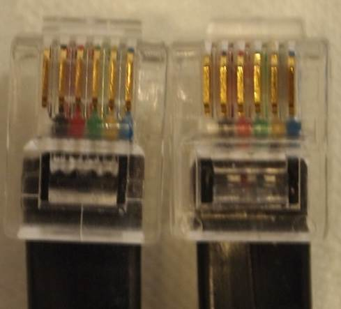

| Hand controller cable ends. |
|  |
|
With both positioned with the pins up. the normal color code will be white, black, red, green, yellow, blue from left to right in connectors. But what matters is that they are the same in both connectors. |
|
According to the datasheet from Assmann there part number for a 14 foot cable should be
AT-C-26-6/6/B-14/R-R and the data sheet is available at http://assmann.us/specs/AT-C-26-6_6_B-14_R-R.pdf Digikey carries the item under there part number A2662R-14C-ND and the link is http://www.digikey.com/product-search/en?vendor=0&keywords=A2662R-14C-ND for a cost of about $8.00 plus shipping. Now I have ordered the above part and tested it, and it seems to work ok. I was a little concerned in that the diameter is smaller than the one supplied by Losmandy. Measuring operating voltages show that it drops about 0.1 more volts than the Losmandy coiled cord cable, but the hand controller is still receiving +4.75 volts which is dropped down to +3.3 volts with an internal regular. All data seem to transfer ok also. I cannot guarantee that this cable will not cause errors, but first impressions ( 19 July 2013) is that it will work fine. |